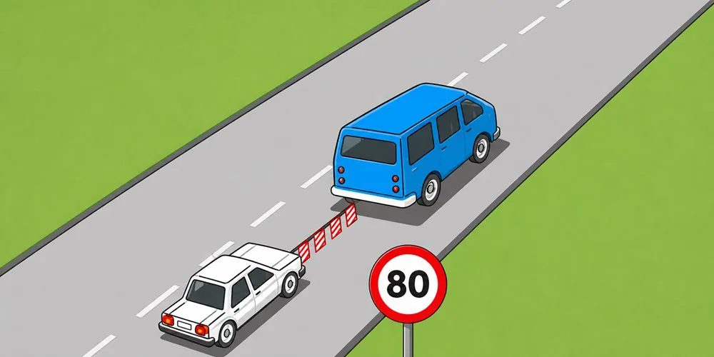
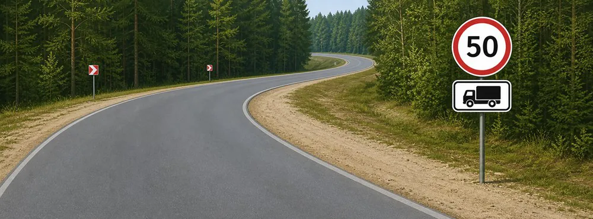
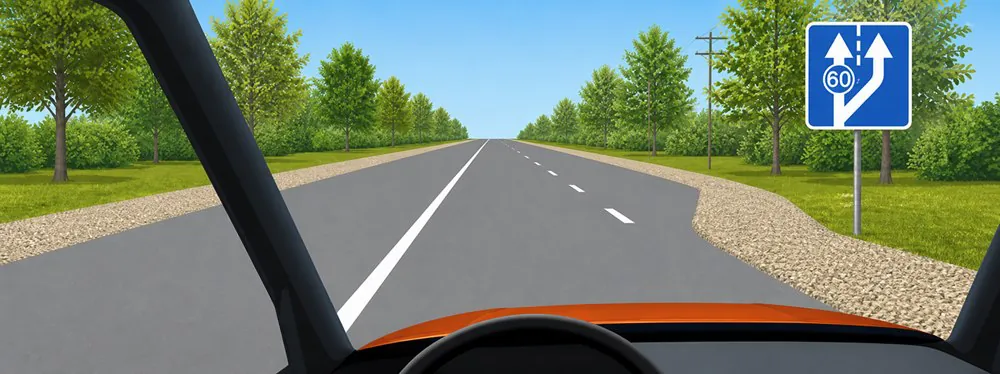
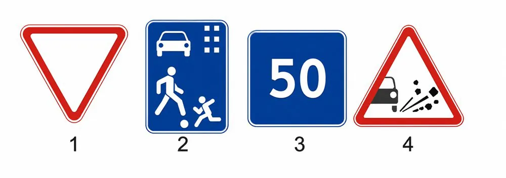

Extraction review - Group 8 (en)
53 questions from group-8-en.pdf - 4 with a picture - 0 with an uncertain picture mapping. The correct option is highlighted in green.
1.PDF page 1 - g8-q001
What is the maximum permitted speed for passenger cars on roads outside populated areas?
(no picture)
- 110 km/h.
- 100 km/h.
- 90 km/h.
- 80 km/h.
- 70 km/h.
Answer: 3
2.PDF page 1 - g8-q002
Trucks carrying people in an equipped cargo bed are permitted to proceed at a speed not exceeding:
(no picture)
- 60 km/h.
- 70 km/h.
- 80 km/h.
Answer: 1
3.PDF page 1 - g8-q003
Vehicles transporting organized groups of children are permitted to proceed at a speed not exceeding:
(no picture)
- 60 km/h.
- 70 km/h.
- 80 km/h.
Answer: 1
4.PDF page 1 - g8-q004
In populated areas, vehicles are permitted to proceed at a speed not exceeding:
(no picture)
- 60 km/h.
- 80 km/h.
- 90 km/h.
Answer: 1
5.PDF page 1 - g8-q005
At what speed are trucks with a maximum authorized mass not exceeding 3.5 metric tons permitted to proceed outside populated areas?
(no picture)
- Not exceeding 90 km/h.
- Not exceeding 70 km/h.
- Not exceeding 80 km/h.
Answer: 1
6.PDF page 2 - g8-q006
During towing, if the hazard warning lights are absent or malfunctioning, the emergency warning triangle must be placed:
(no picture)
- At the rear of the towed vehicle.
- At the front of the towing vehicle.
- On either vehicle, in a visible location, at the driver’s discretion.
Answer: 1
7.PDF page 2 - g8-q007
When towing with a rigid coupling, the distance between the vehicles must not exceed:
(no picture)
- 2 m.
- 3 m.
- 4 m.
- 5 m.
- 6 m.
Answer: 3
8.PDF page 2 - g8-q008
When towing with a rigid or flexible coupling, is it permitted to carry people in the cargo bed of a truck?
(no picture)
- Permitted in the cargo beds of both the towing and towed trucks.
- Permitted only in the cargo bed of the towed truck.
- Permitted only in the cargo bed of the towing truck.
- Prohibited in the cargo beds of both trucks.
Answer: 3
9.PDF page 2 - g8-q009
When towing with a rigid or flexible coupling, in which of the following cases is carrying people in the towed vehicle permitted?
(no picture)
- In a bus.
- In a passenger car.
- In the cargo bed of a truck when towing with a rigid coupling.
Answer: 2
10.PDF page 2 - g8-q010
What is the maximum permitted speed when towing with a motor vehicle?
(no picture)
- 30 km/h.
- 40 km/h.
- 50 km/h.
- 60 km/h.
- 70 km/h.
Answer: 3
11.PDF page 2 - g8-q011
Under icy road conditions, towing is prohibited:
(no picture)
- With a flexible coupling.
- With a rigid coupling.
- By the partial-loading method.
Answer: 1
12.PDF page 3 - g8-q012
What is the maximum speed at which towing may be performed under the indicated conditions?

- 30 km/h.
- 50 km/h.
- 70 km/h.
- 80 km/h.
Answer: 2
13.PDF page 3 - g8-q013
When towing with a flexible or rigid coupling, is carrying people in the towed motor vehicle permitted?
(no picture)
- Permitted in a bus and trolleybus.
- Permitted only in a passenger car.
- Permitted in the cargo bed of a truck and in a passenger car.
- Permitted in the cab of a truck and in a passenger car.
- Prohibited.
Answer: 4
14.PDF page 3 - g8-q014
Under icy road conditions, towing:
(no picture)
- Is prohibited.
- Is permitted.
- Is permitted when towing with a rigid coupling or by the partial-loading method.
Answer: 3
15.PDF page 3 - g8-q015
What is the maximum permitted speed when towing a vehicle with a flexible coupling?
(no picture)
- 70 km/h.
- 60 km/h.
- 50 km/h.
- 40 km/h.
- 30 km/h.
Answer: 3
16.PDF page 3 - g8-q016
In which case is towing prohibited?
(no picture)
- Under icy road conditions with a rigid coupling.
- Under icy road conditions with a flexible coupling.
- By motorcycles with sidecars.
Answer: 2
17.PDF page 4 - g8-q017
When towing motor vehicles outside populated areas, the speed must not exceed:
(no picture)
- 30 km/h.
- 40 km/h.
- 50 km/h.
- 60 km/h.
- 70 km/h.
Answer: 3
18.PDF page 4 - g8-q018
Is towing motorcycles permitted?
(no picture)
- Towing motorcycles with sidecars is permitted.
- Towing motorcycles without sidecars is permitted.
- Permitted in both cases.
Answer: 1
19.PDF page 4 - g8-q019
When towing, what distance between the vehicles must be maintained by a flexible coupling?
(no picture)
- 1–3 m.
- 2–4 m.
- 3–6 m.
- 4–6 m.
- 4–8 m.
Answer: 4
20.PDF page 4 - g8-q020
What is the maximum permitted speed on freeways for passenger cars towing a trailer?
(no picture)
- 110 km/h.
- 100 km/h.
- 90 km/h.
- 80 km/h.
- 70 km/h.
Answer: 3
21.PDF page 4 - g8-q021
When towing with a rigid coupling, the distance between the vehicles must not exceed:
(no picture)
- 4 m.
- 5 m.
- 6 m.
Answer: 1
22.PDF page 4 - g8-q022
When towing a motor vehicle by the partial-loading method, carrying passengers is permitted:
(no picture)
- In the cargo bed of the towing vehicle.
- In the cab of the towed vehicle.
- In the cargo bed of the towed vehicle.
- In the cab of the towing vehicle.
Answer: 4
23.PDF page 5 - g8-q023
Is towing motorcycles with sidecars permitted?
(no picture)
- Permitted only with a rigid coupling.
- Prohibited.
- Permitted.
Answer: 3
24.PDF page 5 - g8-q024
What is the maximum permitted speed when towing with a flexible coupling?
(no picture)
- 70 km/h.
- 60 km/h.
- 50 km/h.
- 40 km/h.
- 30 km/h.
Answer: 3
25.PDF page 5 - g8-q025
Cargo must be positioned and, when necessary, secured on the vehicle so that it:
(no picture)
- Does not extend above the sides of the cargo bed.
- Does not create significant noise, raise dust, or pollute the road or the environment.
- Does not extend more than 0.8 m beyond the rear edge of the vehicle.
Answer: 2
26.PDF page 5 - g8-q026
Children may be carried in the front seat of a passenger car that is not equipped with a child restraint system if they have reached the age of:
(no picture)
- 10 years.
- 11 years.
- 12 years.
Answer: 3
27.PDF page 5 - g8-q027
Is carrying people in a cargo trailer permitted?
(no picture)
- Prohibited.
- Permitted.
- Permitted only for persons accompanying the cargo.
Answer: 1
28.PDF page 5 - g8-q028
Is carrying children under 12 years of age on the rear seat of a motorcycle permitted?
(no picture)
- Permitted.
- Prohibited.
Answer: 2
29.PDF page 5 - g8-q029
While the vehicle is moving, are persons permitted to be in the cargo bed of a truck if it is not equipped for carrying people?
(no picture)
- Prohibited.
- Permitted on roads that are not freeways.
- Permitted only for persons accompanying the cargo or proceeding to receive it, provided they are seated on seats installed below the level of the sides of the cargo bed.
Answer: 3
30.PDF page 6 - g8-q030
Carrying people in a cargo trailer is:
(no picture)
- Prohibited.
- Permitted.
- Permitted only for persons accompanying the cargo.
Answer: 1
31.PDF page 6 - g8-q031
When towing with a flexible or rigid coupling, is carrying people in the towed motor vehicle permitted?
(no picture)
- Permitted in a bus and trolleybus.
- Permitted in the cab of a truck and in a passenger car.
- Permitted in the cargo bed of a truck and in a passenger car.
- Prohibited.
Answer: 2
32.PDF page 6 - g8-q032
What is the maximum speed permitted for a motorcycle in areas designated by the “Residential Zone” and “End of Residential Zone” signs?
(no picture)
- 20 km/h.
- 30 km/h.
- 40 km/h.
Answer: 1
33.PDF page 6 - g8-q033
When carrying people in an equipped cargo bed, the truck driver must proceed at a speed not exceeding:
(no picture)
- 50 km/h.
- 60 km/h.
- 70 km/h.
Answer: 2
34.PDF page 6 - g8-q034
During towing, the towed vehicle must have the following activated:
(no picture)
- High-beam headlights.
- Low-beam headlights.
- Hazard warning lights.
Answer: 3
35.PDF page 6 - g8-q035
What is the maximum permitted speed for vehicles within areas where the “Residential Zone” and “End of Residential Zone” traffic signs apply?
(no picture)
- Not exceeding 5 km/h.
- Not exceeding 10 km/h.
- Not exceeding 20 km/h.
Answer: 3
36.PDF page 7 - g8-q036
What is the maximum permitted speed for the driver of a truck with a maximum authorized mass not exceeding 3.5 metric tons within the area of effect of these signs?

- No more than 50 km/h.
- No more than 70 km/h.
- No more than 90 km/h.
Answer: 3
37.PDF page 7 - g8-q037
When towing a motor vehicle, in which lane may you continue on this road?

- The right lane only.
- Any lane.
Answer: 1
38.PDF page 7 - g8-q038
What conditions must a driver take into account when selecting a speed within the permitted limits?
(no picture)
- The condition of the road surface.
- Visibility in the direction of movement.
- Both of the above conditions.
Answer: 3
39.PDF page 7 - g8-q039
Within the permitted limits, what maximum speed should a driver select?
(no picture)
- A speed that ensures full control of the vehicle.
- The driver may select any speed that does not exceed the maximum permitted speed.
Answer: 1
40.PDF page 8 - g8-q040
A driver is prohibited from:
(no picture)
- Exceeding the maximum speed specified by the technical characteristics of the vehicle.
- Exceeding the speed specified by the “Speed Limit” identification sign displayed on the vehicle.
- Driving at an unnecessarily low speed and thereby impeding the movement of other vehicles.
- Braking suddenly unless necessary to prevent a traffic accident.
- All of the above actions.
Answer: 5
41.PDF page 8 - g8-q041
Which sign limits speed?

- 1 and 3.
- 1 and 4.
- 2
- 2 and 3.
Answer: 3
42.PDF page 8 - g8-q042
A driver is prohibited from:
(no picture)
- Crossing a railroad crossing at a speed greater than 30 km/h.
- Crossing a railroad crossing at a speed below 30 km/h.
- Proceeding across a railroad crossing, without the permission of the head of the railroad track section, in slow-moving vehicles with a speed below 8 km/h or in tractors coupled to sledges.
Answer: 3
43.PDF page 8 - g8-q043
When approaching an intersection, the driver must operate the vehicle at a speed that:
(no picture)
- Does not exceed the maximum permitted speed established for that road section.
- Allows the driver to stop and yield to vehicles having the right-of-way.
Answer: 2
44.PDF page 8 - g8-q044
A driver is prohibited from increasing speed:
(no picture)
- If doing so would prevent a driver who is passing from completing the passing maneuver.
- If doing so is necessary to clear the way for a driver who has stopped in order to yield.
- If doing so is necessary to clear the intersection.
Answer: 1
45.PDF page 9 - g8-q045
A driver must reduce speed:
(no picture)
- When approaching a vehicle displaying the “Transportation of Children” identification sign while children are boarding or exiting.
- If blinded.
- When an obstruction or danger to traffic arises.
- When approaching a vehicle displaying flashing blue and red beacons and using a special audible signal, as well as when approaching a stationary vehicle displaying flashing blue or flashing blue and red beacons.
- In all of the above cases.
Answer: 5
46.PDF page 9 - g8-q046
If cargo protrudes 0.5 m beyond the side of the vehicle, measured from the outer edge of the marker light, must it be marked during daylight hours with the “Oversized Cargo” identification sign and, at night or under conditions of insufficient visibility, additionally with a white light or reflector at the front and a red light or reflector at the rear?
(no picture)
- Yes.
- No.
Answer: 1
47.PDF page 9 - g8-q047
A truck whose driver holds a driver’s license for Categories B and C, and which meets the requirements for transporting people in a truck, may carry up to:
(no picture)
- 8 passengers.
- 9 passengers.
- 4 passengers.
Answer: 1
48.PDF page 9 - g8-q048
It is prohibited to transport children under 12 years of age:
(no picture)
- In the cargo bed of a truck with sideboards.
- In the enclosed cargo body of a truck.
Answer: 1
49.PDF page 9 - g8-q049
If cargo protrudes 1.2 m beyond the rear end of the vehicle, must it be marked during daylight hours with the “Oversized Cargo” identification sign and, at night or under conditions of insufficient visibility, additionally with a white light or reflector at the front and a red light or reflector at the rear?
(no picture)
- Yes.
- No.
Answer: 1
50.PDF page 9 - g8-q050
Transportation of cargo is prohibited if the cargo:
(no picture)
- Restricts the driver’s field of vision.
- Makes the vehicle difficult to control or reduces its stability.
- Obscures exterior lights or reflectors, license plates, or identification signs, or prevents hand signals from being seen.
- In all of the above cases.
Answer: 4
51.PDF page 10 - g8-q051
If the condition or placement of the cargo does not allow it to be transported in compliance with the rules, the driver must:
(no picture)
- Deliver the cargo safely to the nearest unloading location.
- Correct the violations or stop proceeding.
Answer: 2
52.PDF page 10 - g8-q052
If cargo protrudes 0.6 m beyond the rear end of the vehicle, must it be marked during daylight hours with the “Oversized Cargo” identification sign and, at night or under conditions of insufficient visibility, additionally with a white light or reflector at the front and a red light or reflector at the rear?
(no picture)
- Yes.
- No.
Answer: 2
53.PDF page 10 - g8-q053
If cargo protrudes 0.3 m beyond the side of the vehicle, measured from the outer edge of the marker light, must it be marked during daylight hours with the “Oversized Cargo” identification sign and, at night or under conditions of insufficient visibility, additionally with a white light or reflector at the front and a red light or reflector at the rear?
(no picture)
- Yes.
- No.
Answer: 2